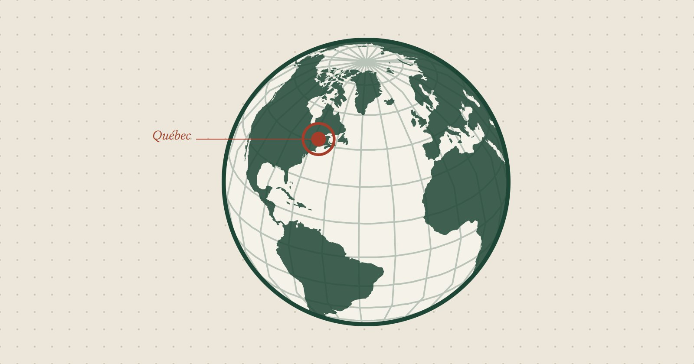

Hors-série · En chantier
Atlas
Un globe interactif de mes voyages
Atlas sera un globe terrestre interactif en 3D pour explorer mes voyages : les lieux visités, des photographies et quelques récits personnels. Le projet est en préparation ; rien n'est encore en ligne.
Texte rédigé d'après la description de Léo, à valider.

- Statut
- En chantier ; aucune date de mise en ligne annoncée
- Forme
- Globe terrestre interactif en 3D
- Contenu prévu
- Lieux visités, photographies, récits personnels